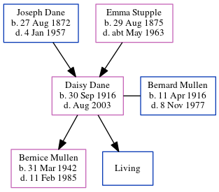

Bernard William Mullen 1916 - 1977
[ Home ] | [ Calendar ] | [ Surnames Index ] | [ Errors ] | [ Family History ]Bernard Mullen, the husband of Daisy Lillian Dane (the second cousin twice-removed on the mother's side of Nigel Horne), was born in Wolverhampton, Staffordshire, England on 11 Apr 19161,2 and married Daisy (with whom he had 2 children: Bernice and Anthony B, along with 1 surviving child) at Faversham Parish Church, Faversham, Kent, England on 16 Apr 19384. In 1977, he was living at 49 Crow Hill, Broadstairs, Kent.
He died on 8 Nov 1977 in Thanet, Kent, England2,3.
Children
- Bernice was born on 31 Mar 1942
Citations
- England & Wales births 1837-2006 - Findmypast
- England & Wales deaths 1837-2007 - Findmypast
- England & Wales Government Probate Death Index 1858-2019 - Findmypast
- England & Wales Marriages 1837-2005 - Findmypast
Media
Bernard William Mullen - Probate

Faversham News - 23 Apr 1938

England & Wales marriages 1837-2005 - BMD/M/1938/2/AZ/001020/063
England & Wales deaths 1837-2007 - BMD/D/1977/4/AZ/000768/112
England & Wales births 1837-2006 - BMD/B/1916/2/AZ/001027/089
England & Wales Government Probate Death Index 1858-2019 - GBOR/GOVPROBATE/C/1978-1978/00150020
Family Tree
Map
Generated by ged2site. Last updated on Jul 3, 2024
Known Issues
Residence record for 1977 contains no citation
Listed in the residence for 1977, but spouse Daisy Dane is not
No records of living with anyone
1939 UK register information missing